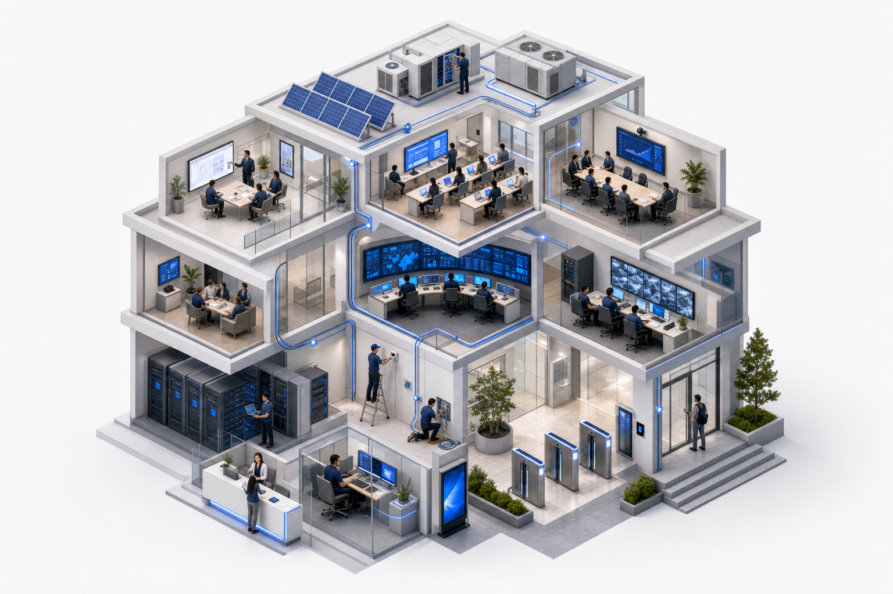

01
Data yang sama dicatat berkali-kali
Data siswa, pegawai, atau aset diketik ulang di tiap aplikasi. Ketika salah satu berubah, sisanya tertinggal.
Memuat Solusi Integrasi Digital
Solusi Integrasi Digital
Sembilan modul software yang dirancang untuk bekerja sebagai satu sistem: pembelajaran, administrasi, keuangan, gedung, keamanan, dan pemantauan berjalan di atas data yang sama.
Kenapa perlu diintegrasikan
Sebagian besar instansi tidak kekurangan aplikasi. Yang kurang adalah satu lapisan yang membuat aplikasi-aplikasi itu saling bicara. Ini pola yang paling sering kami temui di lapangan.
01
Data siswa, pegawai, atau aset diketik ulang di tiap aplikasi. Ketika salah satu berubah, sisanya tertinggal.
02
Angka ditarik satu per satu dari aplikasi berbeda, lalu digabung di spreadsheet sebelum bisa dibaca pimpinan.
03
CCTV, access control, HVAC, dan display sudah terpasang, tetapi statusnya tidak muncul di dashboard mana pun.
04
Setiap unit punya layar sendiri. Tidak ada tempat untuk melihat kondisi instansi secara utuh dalam satu waktu.
05
Setiap aplikasi punya daftar pengguna sendiri, sehingga penonaktifan akun lama sering terlewat.
06
Karena tidak ada pola integrasi yang disepakati, setiap kebutuhan baru dimulai dari nol.
Sembilan modul
Setiap modul berdiri sebagai solusi utuh, tetapi dibangun di atas lapisan data yang sama — sehingga menambah modul berikutnya tidak berarti membangun ulang dari awal.
Materi, tugas, ujian online/CBT, penilaian, dan analitik belajar dalam satu ruang untuk guru dan siswa.
Lihat modul ZerraPPDB, data induk siswa, jadwal & kelas, absensi harian, raport, kepegawaian, dan portal orang tua.
Lihat modul ZerraTagihan SPP, pembayaran melalui virtual account, pemantauan tunggakan, RKAS, dan laporan keuangan.
Lihat modul ZerraHVAC, pencahayaan, energi, parkir, booking ruang, dan pemeliharaan aset dikendalikan dari satu platform.
Lihat modul ZerraSatu tampilan untuk status perangkat, alarm, energi, okupansi, dan indikator operasional lintas unit.
Lihat modulAplikasi kerja yang mengikuti proses internal Anda, termasuk integrasi ke sistem dan perangkat existing.
Lihat layananPerlindungan endpoint, jaringan, dan akses data instansi, disertai tata kelola dan pemulihan insiden.
Lihat layananPenerbitan ijazah, sertifikat, dan dokumen resmi yang keasliannya bisa diperiksa siapa pun secara mandiri.
Lihat modulAsisten visual interaktif untuk layanan informasi, edukasi, dan pemanduan pengunjung di ruang publik.
Lihat modulCara modul saling terhubung
Modul tidak saling menyalin data. Semuanya menulis dan membaca dari lapisan yang sama, sehingga perubahan di satu tempat langsung terlihat di tempat lain.
CCTV, access control, HVAC, sensor, display, dan panel yang sudah terpasang dibaca melalui protokol standar.
Identitas, aset, ruang, dan transaksi disimpan sekali. Setiap modul merujuk ke data yang sama, bukan salinannya.
Pembelajaran, administrasi, keuangan, gedung, dan keamanan berjalan sebagai aplikasi terpisah di atas lapisan data.
Dashboard, portal orang tua, aplikasi petugas, dan command center menyajikan lapisan data sesuai peran penggunanya.
Diterapkan pada
End-to-end solution
Dari pemetaan kebutuhan hingga dukungan teknis, CMI membantu instansi merancang, menyediakan, mengintegrasikan, dan menjaga solusi tetap berjalan.

Memahami kebutuhan ruang, alur kerja, target operasional, dan kondisi teknis instansi.
Menyusun rancangan solusi, spesifikasi perangkat, integrasi, dan skenario penggunaan.
Menyiapkan perangkat, software, furniture, dan komponen pendukung dari sumber yang sesuai.
Instalasi, konfigurasi, penataan ruang, dan koordinasi teknis dilakukan dalam satu proses.
Menghubungkan perangkat, dashboard, software, jaringan, dan sistem existing agar bekerja bersama.
Pelatihan, pendampingan, maintenance, dan support teknis untuk menjaga operasional tetap stabil.
Alur konsultasi CMI
Proses konsultasi dibuat ringkas agar tim Anda cepat memahami pilihan solusi, estimasi kebutuhan, dan langkah implementasi.
Kami memetakan tujuan, kondisi ruang, perangkat, dan prioritas instansi.
Tim CMI menyusun opsi solusi yang relevan dengan kebutuhan dan anggaran.
Ruang lingkup, jadwal kerja, dan spesifikasi teknis disiapkan sebelum eksekusi.
Instalasi, integrasi, pelatihan, dan dukungan teknis berjalan dalam satu alur.
FAQ
Belum terjawab? Kirim kebutuhan Anda dan tim kami akan menyiapkan penjelasan yang spesifik untuk kondisi instansi Anda.
Tidak. Sebagian besar instansi mulai dari satu atau dua modul yang paling mendesak, lalu menambah modul berikutnya setelah pola datanya terbentuk.
Sistem existing tidak selalu perlu diganti. Kami memeriksa apakah aplikasi tersebut menyediakan jalur integrasi, lalu menghubungkannya ke lapisan data agar tidak ada pencatatan ganda.
Bisa keduanya. Penempatan on-premise dipilih ketika ada ketentuan internal soal kedaulatan data; penempatan cloud dipilih ketika instansi tidak ingin mengelola infrastruktur sendiri.
Pelatihan dan pendampingan termasuk dalam lingkup implementasi CMI, mencakup admin sistem, pengguna harian, dan pimpinan yang membaca laporan.
Ya, dan itu justru alasan utamanya. Display, CCTV, access control, dan perangkat ruang yang kami pasang dapat dibaca statusnya melalui modul Dashboard & Monitoring.
Sampaikan kondisi sistem yang berjalan sekarang. Tim Cahaya Mustika Internesia akan memetakan modul mana yang paling mendesak, bagaimana menghubungkannya ke aplikasi dan perangkat yang sudah ada, serta urutan implementasi yang paling masuk akal untuk instansi Anda.